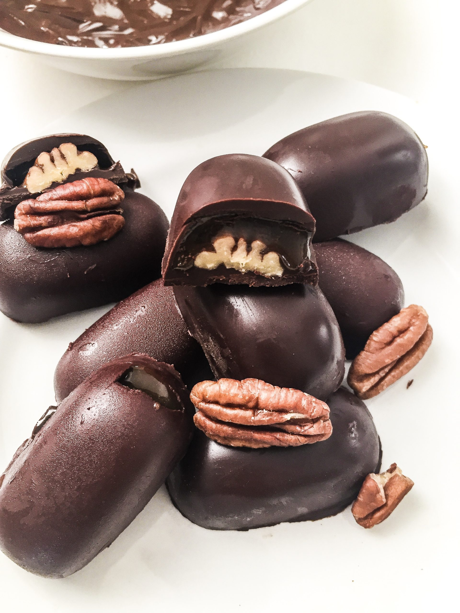

Dulce Tentación
Como preparar chocotejas peruanas, una deliciosa tentación de chocolate con rellenos irresistibles y déjate llevar por el encanto de la cocina peruana.
Receta de chocotejas
Esta irresistible receta de chocotejas Perú, es una de las delicias que destacan en la cocina peruana, un exquisito postre tradicional que combina lo mejor del chocolate con sabores autóctonos y rellenos irresistibles, que son una tentación divina para el paladar.
Cómo hacer chocotejas
- Descubre el secreto más sublime de cómo hacerchocotejas rellenas y convertirlo en un delicioso manjar para deleitar tu paladar.
- 1:En primer lugar, vamos a preparar el relleno de las chocotejas. En una sartén, mezcla el azúcar y el agua, y lleva a fuego medio. Cocina hasta obtener un jarabe espeso.
- 2:Añade las nueces y las frutas secas picadas al jarabe y remueve bien hasta que todos los ingredientes estén bien incorporados.
- 3:Retira la mezcla del fuego y deja enfriar. Una vez que esté fría, toma pequeñas porciones y dales forma redonda u ovalada, según tu preferencia.
- 4:En un recipiente resistente al calor, derrite el chocolate a baño maría o en el microondas, cuidando de no quemarlo.
- 5:Una vez que el chocolate esté derretido, sumerge cada porción de relleno en el chocolate y asegúrate de que esté completamente cubierta. Luego, colócala sobre una bandeja forrada con papel encerado.
- 6:Repite el proceso hasta que hayas cubierto todas las porciones de relleno. Luego, deja reposar las chocotejas a temperatura ambiente hasta que el chocolate se endurezca.
- 7:Una vez que el chocolate haya endurecido, envuelve cada chocoteja en papel celofán o papel de seda para darles un toque especial y presentarlas de manera más atractiva.
Nuestra Ubicación
Nuestro establecimiento está ubicado en el corazón de la ciudad
Ingredientes
- 200 Gramos de chocolate de buena calidad.
- 100 Gramos de nueces picadas./li>
- 100 Gramos de frutas secas variadas (pasas, almendras, avellanas, etc.).
- 100 Gramos de azúcar.
- 50 Mililitros de agua./li>
- Papel celofán o papel de seda para envolver.